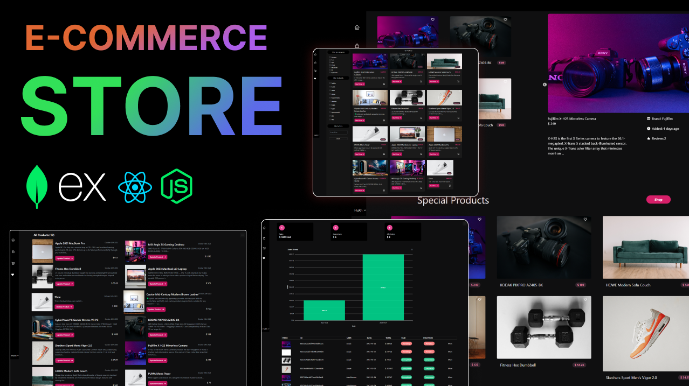
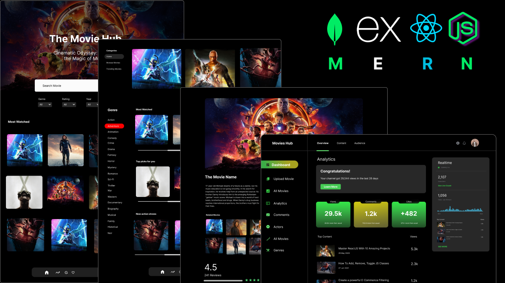
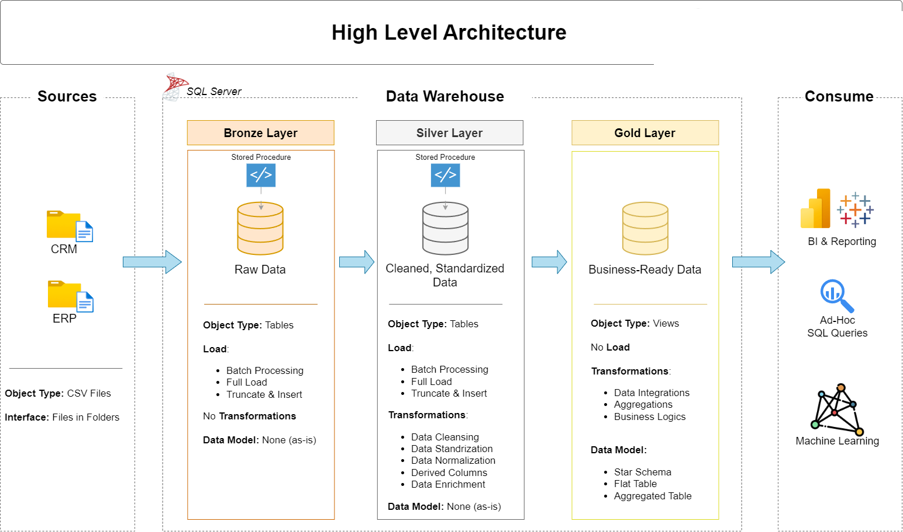
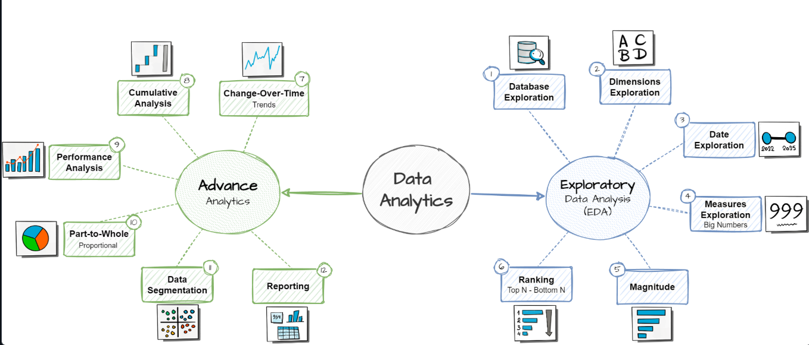

My Projects

MERN-E-Commerce-Store
💼 Building the Empire: Dive into the heart of e-commerce development, creating an awe-inspiring shopping experience with dynamic product listings, secure user authentication, and a lightning-fast search engine. 🌐 Connecting the World: Learn the art of connecting your e-commerce platform to the globe, including payment gateway integration, order processing, and international shipping logistics. 🛍️ Elevating the User Experience: Take your website to the next level with personalized recommendations, advanced filtering, and interactive shopping carts. 🔒 Security and Scalability: Fortify your project with the most advanced security practices and ensure your platform can scale seamlessly as your empire grows.

MERN-Movies-App-main
Embark on a journey to MERN mastery as we delve into the creation of a scalable movies application. From conceptualization to execution, you'll learn step-by-step how to harness the power of the MERN stack (MongoDB, Express.js, React.js, Node.js) to craft an immersive user experience. Elevate your development skills as we cover the intricacies of building a robust backend, dynamic frontend, and seamless integration, ensuring optimal performance and scalability.

Data Warehouse and Analytics Project
This project demonstrates a comprehensive data warehousing and analytics solution, from building a data warehouse to generating actionable insights. Designed as a portfolio project, it highlights industry best practices in data engineering and analytics. This project involves: Data Architecture: Designing a Modern Data Warehouse Using Medallion Architecture Bronze, Silver, and Gold layers. ETL Pipelines: Extracting, transforming, and loading data from source systems into the warehouse. Data Modeling: Developing fact and dimension tables optimized for analytical queries. Analytics & Reporting: Creating SQL-based reports and dashboards for actionable insights.

data-analytics-project-with-sql
A comprehensive collection of SQL scripts for data exploration, analytics, and reporting. These scripts cover various analyses such as database exploration, measures and metrics, time-based trends, cumulative analytics, segmentation, and more. This repository contains SQL queries designed to help data analysts and BI professionals quickly explore, segment, and analyze data within a relational database. Each script focuses on a specific analytical theme and demonstrates best practices for SQL queries.
Power BI Project
The project involves tracking, aggregating, and reporting on various climatic variables over a 12-month period (January through December), as well as grouping them by season (Autumn, Summer, Winter, Spring).Specifically, the project dashboard monitors the following environmental factors:Temperature: Measured at multiple elevations, including surface level, 5 meters, 10 meters, and 20 meters. The data calculates maximums, minimums, averages, and standard deviations.Relative Humidity: Tracking maximum, minimum, and mean percentages, along with the standard deviation.Wind Speed: Measured in meters per second (m/s) at elevations of 10 meters and 20 meters.Solar Radiation: Measured in Kw/m2, tracking the minimum, mean, and maximum levels, as well as the standard deviation.

Data Mining projet
The motivation behind this analysis is to assist data scientists, researchers, and decision-makers in selecting the most suitable classification algorithm for their specific tasks. By comparing the accuracy, classification error, sensitivity, and specificity of these algorithms on two datasets, we aim to provide insights into their strengths and weaknesses. The report is organized as follows: after this introduction, we will delve into each algorithm's details and methodology. We will then present the results of our analysis, comparing the performance of these algorithms. Finally, we will draw conclusions and offer recommendations for future work in the field of classification using machine learning. The algorithms selected for this analysis represent a range of approaches, from linear to non-linear, simple to complex, and probabilistic to deterministic. As such, this study will provide a well-rounded understanding of how different classification techniques perform under various circumstances.